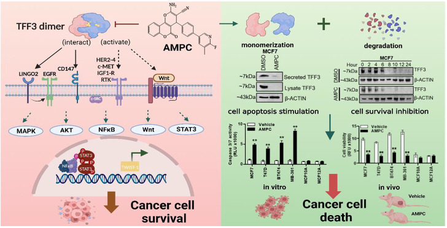
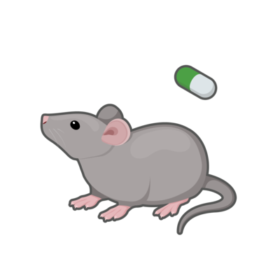
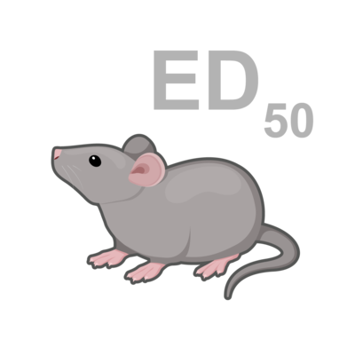
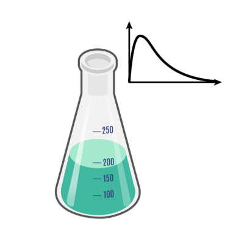

SIN002
AMPC
TFF3 Inhibitor

已完成实验 · Assays Completed
自主研发并开放合作授权 · Wholly-owned and Available for Licensing

单药体内药效研究
In vivo efficacy studies with single agent

体内 PK-PD 研究
In vivo PK-PD
体内药代动力学研究
In vivo PK studies
体内药效研究
In vivo efficacy studies

体外 ADMET 研究
In vitro ADMET studies
可开发性 / CMC
Developability/CMC
体外细胞实验
In vitro cell-based
毒理学研究
Toxicology studies
激酶实验
Enzymatic
靶点科学依据 · Target Rationale
TFF3（Trefoil Factor 3）是一种经过充分验证的肿瘤治疗靶点与分子标志物。前期研究表明，TFF3在乳腺上皮细胞中的过表达可直接诱导恶性转化，并在乳腺癌、肺腺癌、胰腺癌、结直肠癌及食管腺癌等多种实体瘤中呈高表达；其表达水平与肿瘤体积、病理分级、淋巴结转移、远处转移及治疗抵抗显著相关。尤为重要的是，TFF3在肺腺癌和食管腺癌中高表达，而在对应鳞癌中低表达或不表达，这一表达谱特征使其具备指导肿瘤分子分型与临床决策的潜在价值。在分子机制层面，TFF3可通过激活p44/42 MAPK、PI3K-AKT、STAT3、WNT/β-catenin及NF-κB等促癌信号通路，并抑制HIPPO肿瘤抑制通路，从而促进肿瘤细胞增殖、抑制凋亡、诱导血管生成、增强迁移侵袭能力及获得性耐药。此外，TFF3被鉴定为调控肿瘤休眠（tumor dormancy）的关键分泌因子，可通过调控细胞周期进程并诱导肿瘤干细胞样特性，介导内分泌治疗（如他莫昔芬）及EGFR-TKI等靶向药物的耐药。
项目状态 · Project Status
AMPC是我们通过虚拟高通量筛选（virtual high-throughput screening）结合构效关系（SAR）优化获得的首创性（first-in-class）小分子TFF3二聚化抑制剂。该化合物能够选择性诱导TFF3阳性肿瘤细胞发生凋亡，而对TFF3阴性正常细胞无明显毒性。在临床前研究中，AMPC已在乳腺癌、肺腺癌、胃癌、胰腺癌、结直肠癌、肝癌、前列腺癌及食管腺癌等多种异种移植瘤模型中显示出显著的抗肿瘤活性，且耐受性良好。此外，AMPC与多柔比星、顺铂、5-氟尿嘧啶、吉西他滨等一线化疗药物，以及紫杉醇、他莫昔芬、MEK1/2抑制剂、c-MET抑制剂等联合应用时表现出明显的协同增效作用，并可部分逆转TKI及内分泌治疗耐药。